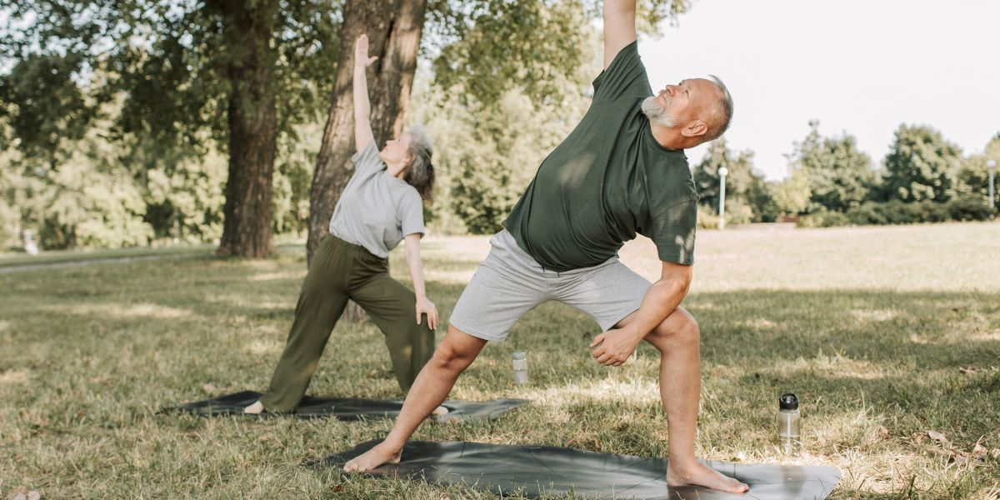

Nutrição e Bem-estar
Probióticos
O Segundo Cérebro: Os Probióticos e a sua Imunidade
Como as bactérias boas podem transformar a sua saúde digestiva, mental e imunológica...
Leia mais →
Energia
Como Hackear a sua Energia Diária sem Cafeína
Descubra os alimentos que proporcionam combustível real e sustentado...
Leia mais →
Mentalidade
Combatendo o Estresse de Forma Natural
Técnicas de respiração e adaptógenos para controlar o cortisol na vida moderna...
Leia mais →Investigação Clínica

Saúde Pública
Saúde Masculina: Quebrando o Tabu do Autocuidado
Uma análise profunda sobre por que os homens evitam o médico e como isso está mudando graças à tecnologia e à informação.
Ver pesquisa completa →Saúde do Homem
Saúde Masculina
Saúde do Homem: O Silêncio que Custa Anos de Vida
Os homens vivem em média 7 anos a menos que as mulheres. Grande parte dos falecimentos precoces ocorrem entre homens. Descubra as causas e o protocolo de prevenção por idade.
Leia o especial completo →Guias de Saúde Prática
Remédios Naturais
7 Sucos Laxantes para Aliviar o Intestino Preso
Receitas rápidas e naturais para restaurar o seu trânsito intestinal hoje mesmo...
Ver guia →
Higiene do Sono
10 Alimentos que Roubam o seu Sono
Café ou chocolate? Descubra o que evitar antes de dormir...
Ver guia →